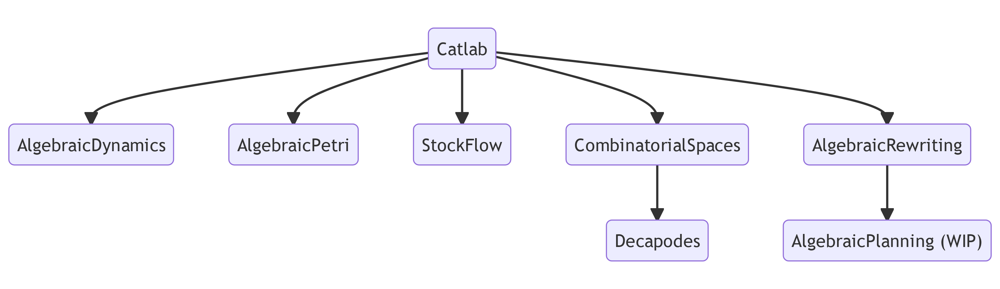
Compositional Structures for Systems Engineering and Design @ NIST
11/4/22
\[ \newcommand{\cat}[1]{\mathsf{#1}} \newcommand{\Set}{\mathsf{Set}} \newcommand{\Petri}{\mathsf{Petri}} \]
James Fairbanks
University of Florida
Angeline Aguinaldo
University of Maryland & Topos Institute
Andrew Baas
George Tech Research Institute
Kris Brown
Topos Institute
Evan Patterson
Topos Institute
Xiaoyan Li
University of Saskatchewan
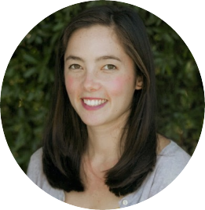 Sophie Libkind
Stanford University & Topos Institute
Owen Lynch
Topos Institute
Present wave of ACT ongoing for 10+ years:
Our aim is to operationalize this novel math as useful technology:
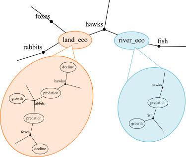
Image: Libkind, Baas, Patterson, Fairbanks 2021 (arxiv:2105.12282)
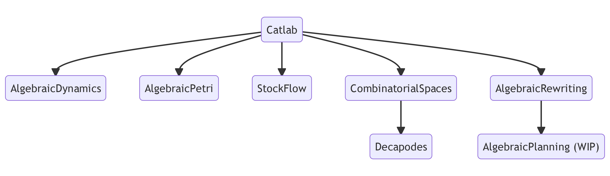
Category theory gains computational content in three ways:
Not mutually exclusive, but Catlab is mostly about #3.
CT in progamming language theory:
Hask)CT as a modeling language:
Having a model-program “isomorphism” is nice when it works, but
We take a pragmatic approach to designing categorical software.
CT and categorical logic enrich the traditional syntax-semantics distinction, making both more flexible:
In conventional progamming:
In AlgebraicJulia:
Undirected wiring diagrams (UWDs) form an operad, a categorical gadget for hierarchical syntax.
Undirected wiring diagrams are a syntax for composing…
AlgebraicPetri)Decapodes)AlgebraicDynamics)All of these algebras are implemented in AlgebraicJulia, with benefits arising from the shared abstraction.
Spivak 2013 (arXiv:1305.0297); Libkind, Baas, Patterson, Fairbanks 2021 (arxiv:2105.12282)
A very useful generic data structure is provided by:
Example: UWDs are acsets on the following schema.
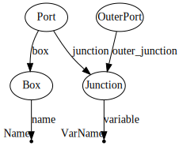Spivak 2012 (arXiv:1009.1166); Patterson, Lynch, Fairbanks 2022 (arXiv:2106.04703)
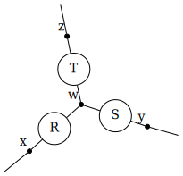
| Box | name |
|---|---|
| 1 | R |
| 2 | S |
| 3 | T |
| Port | box | junction |
|---|---|---|
| 1 | 1 | 1 |
| 2 | 1 | 4 |
| 3 | 2 | 2 |
| 4 | 2 | 4 |
| 5 | 3 | 3 |
| 6 | 3 | 4 |
| OuterPort | outer_junction |
|---|---|
| 1 | 1 |
| 2 | 2 |
| 3 | 3 |
| Junction | variable |
|---|---|
| 1 | x |
| 2 | y |
| 3 | z |
| 4 | w |
The utility of \(\cat{C}\)-sets as an abstraction are the operations you can do on them:
All of these are implemented in AlgebraicJulia.
Current areas of focus:
Modern scientific models can be very complex, yet
This is by necessity, since scientific models are (still) created by humans!
So, on one hand:
Even very complicated models tend to have compositional structure, at least implicitly.
But, on the other hand:
Existing modeling tools tend to miss this structure entirely.
Model created in AnyLogic, courtesy of Nathaniel Osgood and Xiaoyan Li
A major aim of AlgebraicJulia is to enable building scientific models in an explicitly structured way.
In the epidemiology domain, using compartmental models based on
we have two main notions of composition:
Libkind, Baas, Halter, Patterson, Fairbanks 2022 (arXiv:2203.16345)
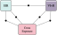
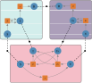
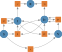
Code: open Petri nets and composing Petri nets
Libkind, Baas, Halter, Patterson, Fairbanks 2022 (arXiv:2203.16345)
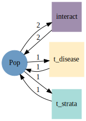
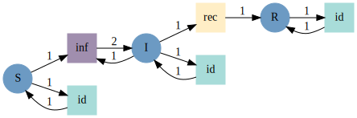
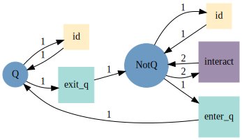
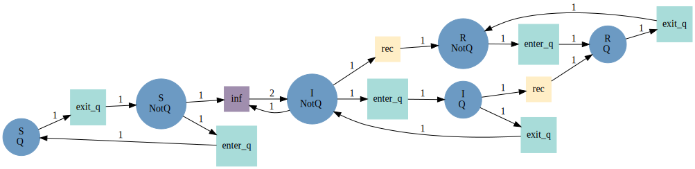
Code: Stratifying Petri nets
Computational physics has some challenges analogous to epidemiology:
But also its own unique challenges:
We’ve taken some first steps in applying ACT in this domain (work ongoing).
Maxwell’s equation become more “strongly typed” in exterior calculus:
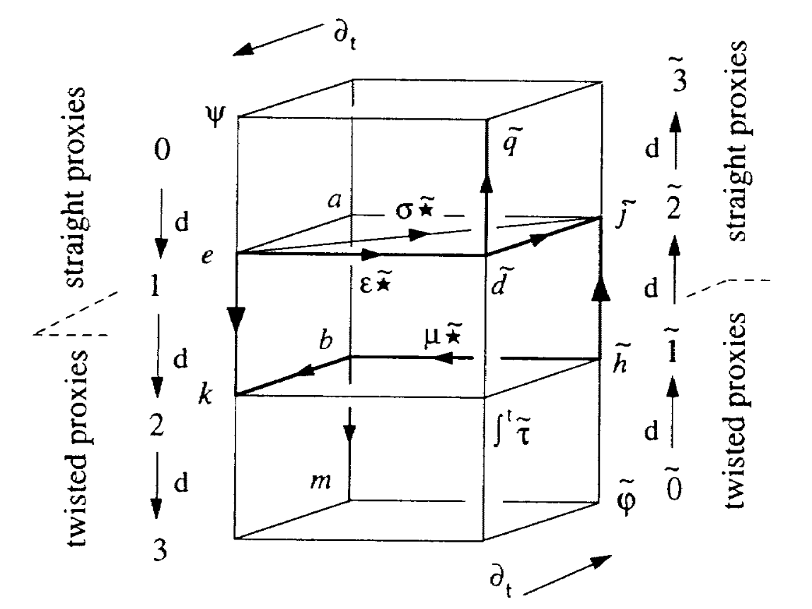
Patterson, Baas, Hosgood, Fairbanks 2022 (arXiv:2204.01843)
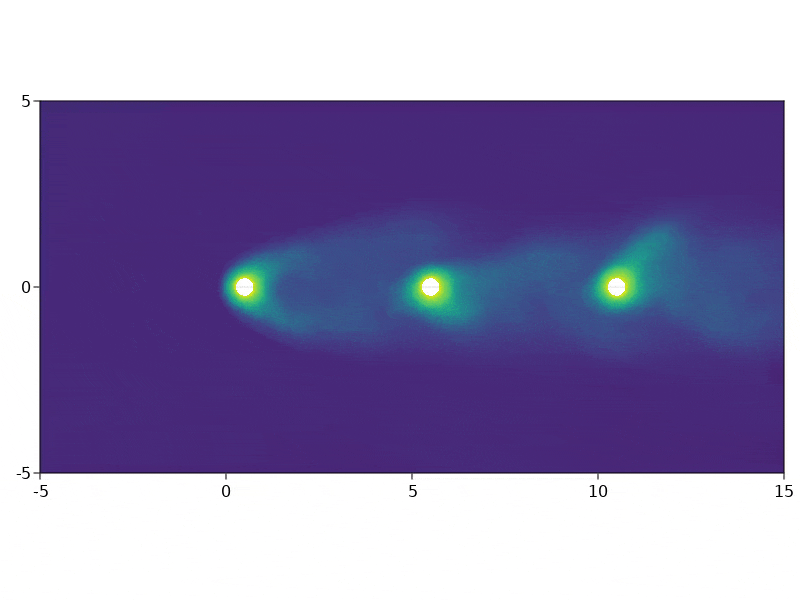
Work in progress
Resources
#catlab.jl stream on Julia ZulipContributing
We welcome new contributors at all levels of experience.
Please reach out if interested!